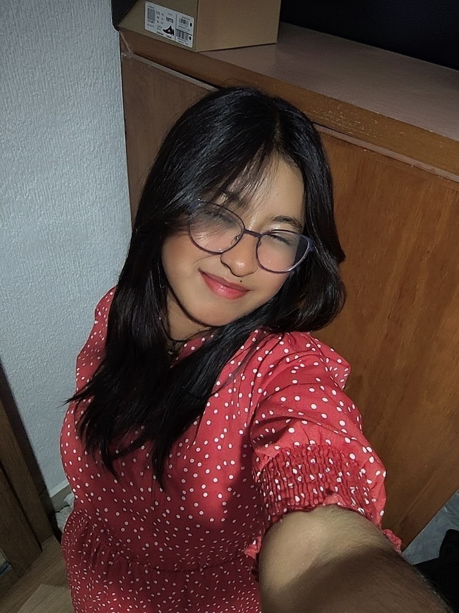

Hola, mi nombre es Sarai Ramirez. Soy estudiante y me gusta aprender cosas nuevas sobre la tecnologia. Vivo aqui en celaya, llevo como 3 años viviendo, antes vivia en La Palma en el municipio de Apaseo el Grande, pero por razones familiares mi familia y yo nos fuimos a vivir a celaya. Para ser sincera a mi no me gusto la idea, pero poco a poco me fui acostumbrando y ya me agrada vivir aqui, ahora si que tengo amistades que tienen una locura como yo y eso me gusta tener amistades que tienen locura por que eso hace divertido la amistad.
Me gusta vestirme de traje, conjuntos elegantes, faldas un poco largas de colores oscuros, playeras un poco holgadas y pantalones de mezcrilla holgados. Me gusta mucho la comida, mi comida favorita es el mole, pollo enchilado, los tacos al pastor. A mi me gusta ver series y peliculas romanticas me la paso diario ver eso,mi color favorito es el negro, vino y el blanco tambien me gusta mucho la musica, mis grupos favoritos son Hillsong UNITED, Generacion 12, Un corazón, ELEVATION RHYTHM y Elevation Worship
Estoy estudiando Ingeneria en Sistemas y Tecnologias de la Información, lo que me intereso de esta carrera fue la programación, los codígos, como se crea las paginas web y las aplicaciónes,etc. Pero antes de aver escogido esta carrera, pase por muchas carreras como, medicina, dentista, veterinaria, enfermeria, luego diseño grafico y otra vez enfermeria y ya despues Ingeneria en Sistemas, pero despues me entro la curiosidad de trabajar con muertos, pero cuando empeze a investigar sobre esa carrera pues vi que no era lo mío y ya me decidí bien por Ingeneria en Sistemas y Tecnologias de la Información, me di cuenta que era lo mío de las computadoras. Apenas llevo como dos semanas y ya estoy amando esta carrera, y me di cuenta que cuando amas algo no te estresa o te matas en hacerlo y desde ahi entendi que tengo que hacer algo que me gusta, me interese y fue cuando me di cuenta que esta carrera de Ingeneria en Sistemas iba ser lo mío.
Visitas: Mi perfil en GitHub
